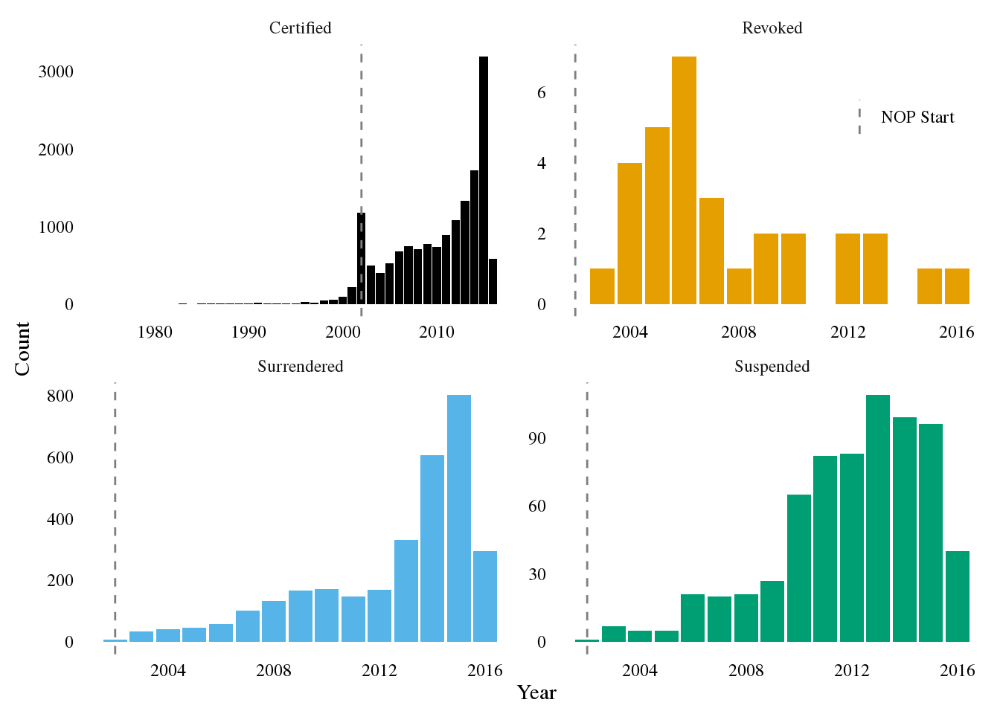
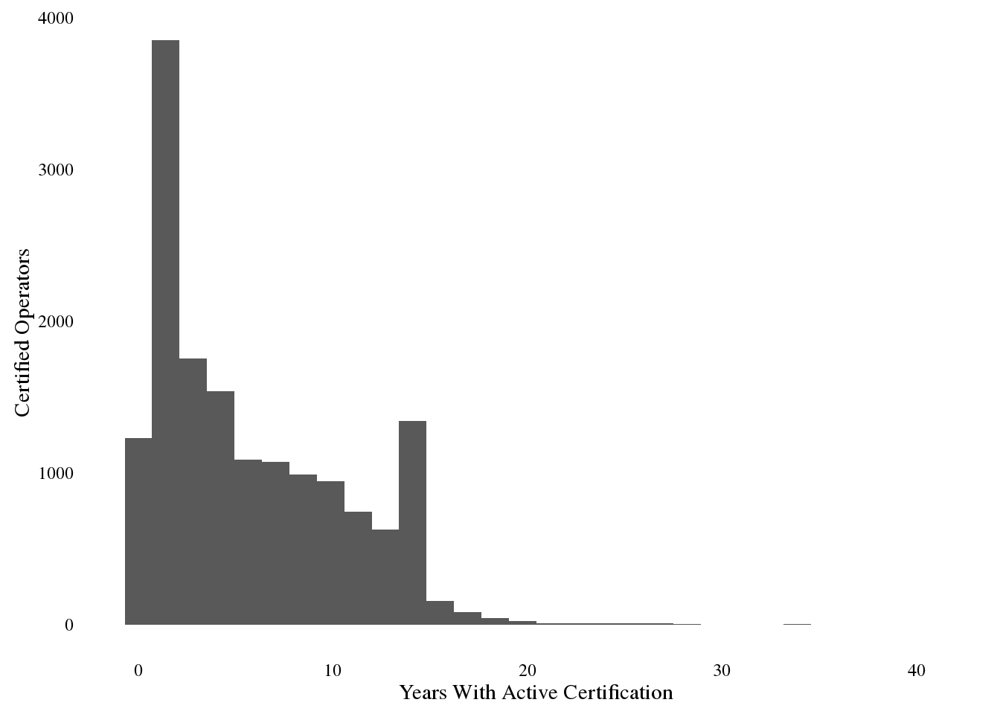
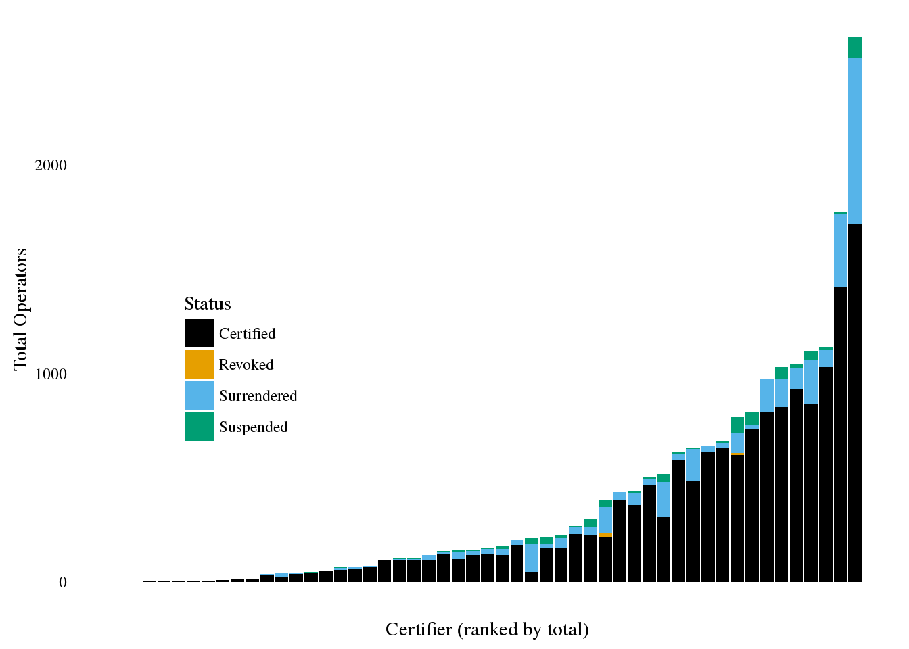
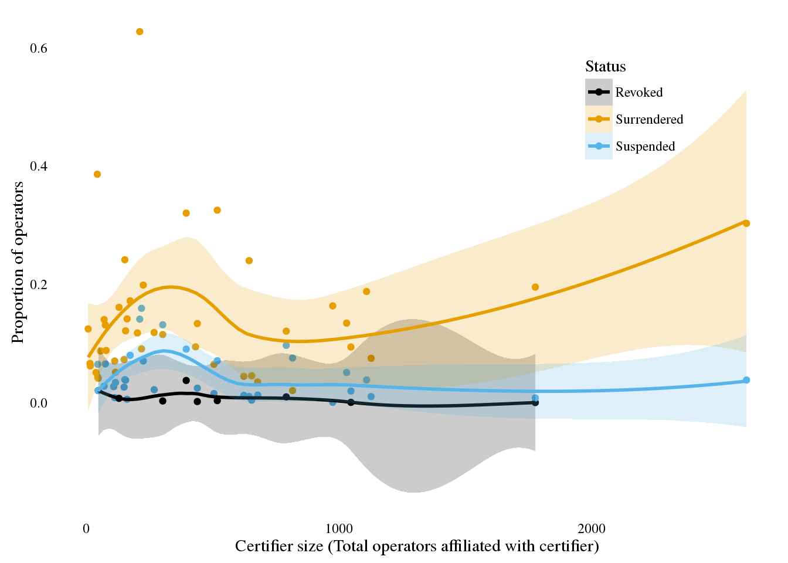
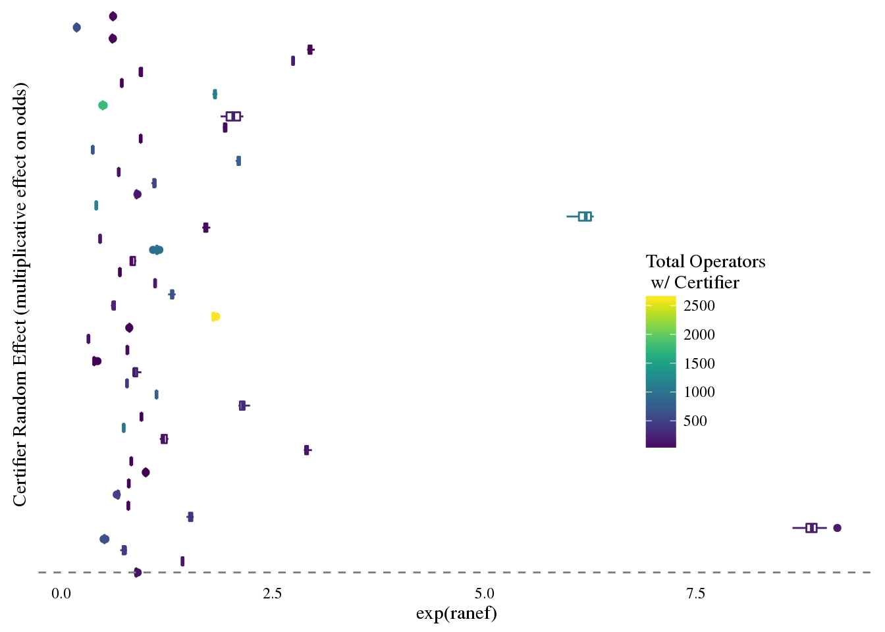
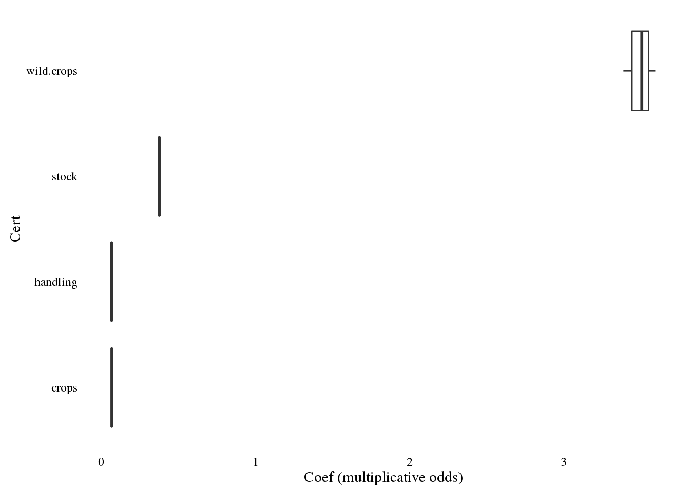

| Var1 | Freq |
|---|---|
| Certified | 15586 |
| Revoked | 31 |
| Surrendered | 3117 |
| Suspended | 681 |

Be sure to note that x and y axes vary over panels. No revocations or suspensions before 2000, although certification date back to 1975. Revocations have been declininng since 2005, while suspensions and surrenders have been on the rise (last drop is partial 2016 obs).
## `stat_bin()` using `bins = 30`. Pick better value with `binwidth`.
## Joining by: "Certifier"
## Joining by: "Certifier"
Below, I fit a survival model. The issue is that our data do not fit within standard modeling protocols (e.g., what to do with left or right censoring/truncation), since in our case we observed two groups: (1) right censored inviduals, where we observed start time (certification date) but not any failure (since they are still certified); and then (2) operators who have already surrendered their license (or have had it revoked or suspended), so we know the “failure date” but not the start date (“left censoring” is when failure has already occured before enrollment, which we don’t have because we know the exact “failure date”, and “left truncation” is when exposure start time predates the observation period, but you still observe an exposure period of some length).
To try to get around this, I simulate start dates for operators who are currently observed to have a suspended, revoked, or surrendered license, and then run a survival model on the resultant data. The simulation process works as follows:
For each observed suspension/revocation/surrender (herafter “failure”), randomly sample a start date from observed certification dates that pre-date the date of failure. This essentially works as if I am sampling from the empirical probability density function; I use this instead of a uniform distribution between the first observed certification date and the date of failure is because the distribution of certifications is far from uniform; as shown above, the distribution of observed certifications starts back in 1975, but there are only a few certifications prior to about 1995, and then increasing through 2016. Note that I assume that no certification lasts for less than 1 year, so in reality I sample from the set of certification dates that are between the first observed certification and 1 year prior to the failure date.
I then fit a survival model (first, just a cox proportional hazard model since I do not have an a priori assumption about the functional form) to the simulated data.
I repeat steps 1 and 2 1000 times, and record the parameter estimates resultant from each simulation. In essence, this is non-parameteric bootstrapping, because the parameter estimate and credible interval are generated by the distribution of estimated parameters.
The model is a mixed effects model (multilevel in this case with a random effect for each certifier). As a demonstration, I store the random intercept estimate for each certifier.
| Observed | Pre-NOP (10/2002) | Keep | Type |
|---|---|---|---|
| Failure | Yes | No | Left-censored (dropped out before program started) |
| Failure | No | Yes | Failure after NOP start, but uncertain certification date |
| Certified | Yes | Yes | Left-truncation (‘at-risk’ prior to program start) |
| Certified | No | Yes | Right-censored (still have not failed) |
library(survival)
library(coxme)
scope = data.frame(
stock = ifelse(temp$LIVESTOCK.Scope.Certification.Status!='',1,0),
crops = ifelse(temp$CROPS.Scope.Certification.Status!='',1,0),
wild.crops = ifelse(temp$WILD.CROPS.Scope.Certification.Status!='',1,0),
handling = ifelse(temp$HANDLING.Scope.Certification.Status!='',1,0),
Certifier = as.character(temp$Certifier)
)
first_date = min(temp$Dec_Date)
nop_dec = decimal_date(nop_start) - first_date
current_date = decimal_date(mdy('07/01/2016')) - first_date
time_status = data.frame(x1 =
ifelse(temp$Status=='Certified',temp$Dec_Date - first_date,NA),
x2 = ifelse(temp$Status=='Certified',NA,
temp$Dec_Date - first_date),
status = ifelse(temp$Status=='Certified',0,1)
)
death_dates = time_status$x2[is.na(time_status$x1)]
draw_from = time_status$x1[!is.na(time_status$x1)]
## How to creat surv object with left-truncation and right censoring
# Surv (##Age at start of observation, ##age at start + last obs, ##event)
reps = 10
boot_grabs = t(sapply(death_dates, function(x)
sample(draw_from[draw_from<(x-1)],reps,replace=T)))
return_full = function(df,name,vec)
{
df[name][is.na(df[name])] = vec
}
rep_x1 = replicate(reps,time_status$x1)
rep_x1[rowSums(is.na(rep_x1))!=0,] = boot_grabs
add_status = time_status
add_status$x2[is.na(add_status$x2)] = current_date
surv_objects = lapply(1:reps, function(x) Surv(time=rep_x1[,x],time2=add_status$x2,event=add_status$status))
mods = lapply(surv_objects,function(x) coxme( x ~ crops + stock + handling + wild.crops + (1|Certifier),
data = scope))
mdf = lapply(mods, function(x) as.data.frame(ranef(x),col.names='ranef'))
for (i in 1:length(mdf))
{
mdf[[i]]$Certifier = rownames(mdf[[i]])
rownames(mdf[[i]]) = 1:nrow(mdf[[i]])
mdf[[i]]$mod_run = i
}
all_results = plyr::join_all(mdf,type='full')
tot_certs = temp %>% group_by(Certifier) %>% summarize(tot_certs = n())
all_results$tot_certs = tot_certs$tot_certs[match(all_results$Certifier,tot_certs$Certifier)]
library(viridis)
ggplot(all_results,aes(y=exp(ranef),x=Certifier,colour=tot_certs)) + geom_boxplot() +coord_flip() +geom_vline(aes(xintercept=1),lty=2,col='grey50')+
theme_tufte(ticks=F) + theme(axis.text.y=element_blank(),
legend.position = c(0.8,0.4)) +
xlab('Certifier Random Effect (multiplicative effect on odds)') +
scale_color_viridis(name = 'Total Operators \n w/ Certifier')
The plot above shows the different in proportional hazard rates across different certifiers. Estimates above 1indicate a greater-than average rate of failure.
Further, while we likely want to think about some more covariates, as an example we can compare the coefficients for operators that did or did not seek certification for particular area:
fix_coefs = t(sapply(mods,fixef))
library(tidyr)
fix_coefs = gather(as.data.frame(fix_coefs))
colnames(fix_coefs) = c('Cert','coef')
ggplot(fix_coefs,aes(y=exp(coef),x=Cert)) + geom_boxplot() +
ylab('Coef (multiplicative odds)')+
theme_tufte(ticks=F) + coord_flip()
Note that at this preliminary stage, I did not explore any additive combinations (i.e., each type is fit separately just as a dummy variable).